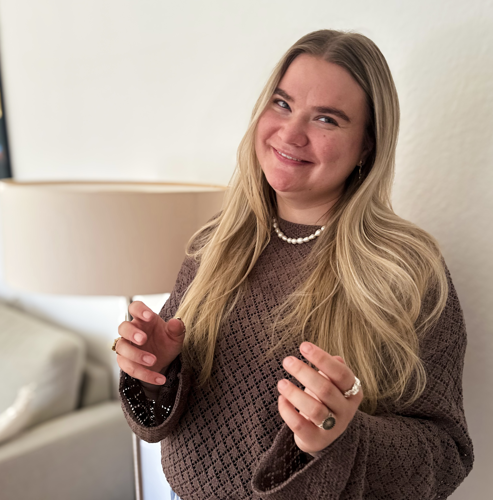
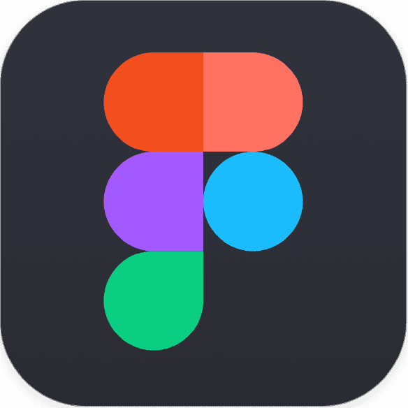
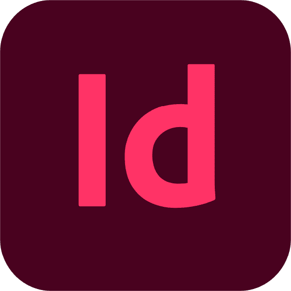
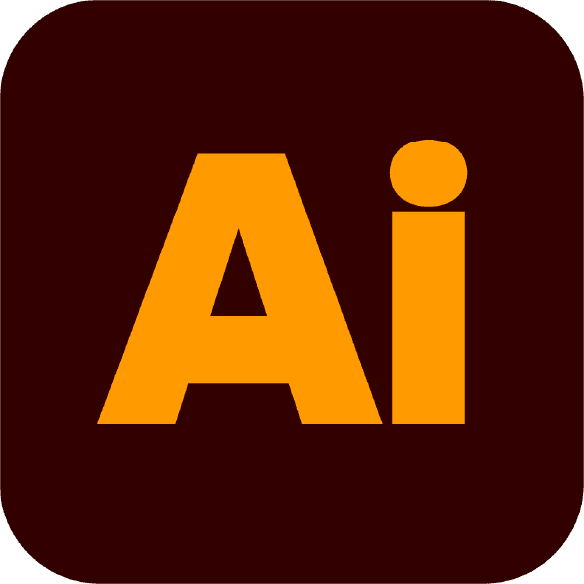
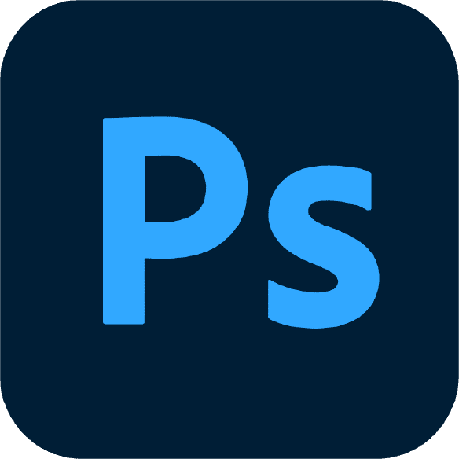
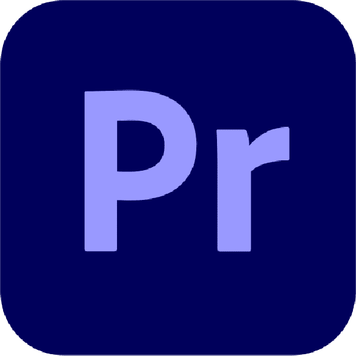
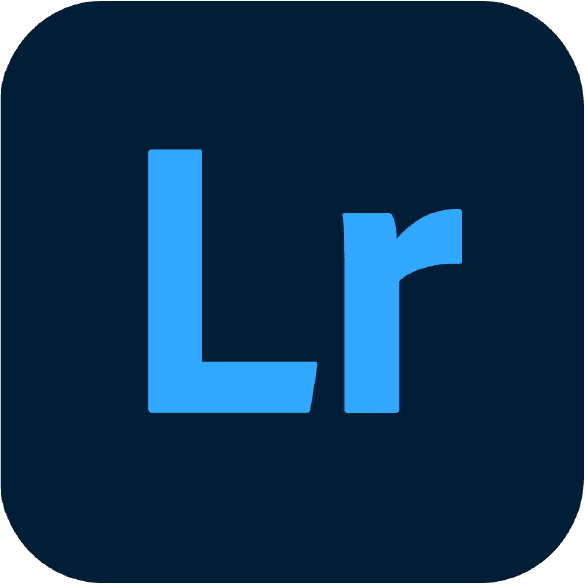
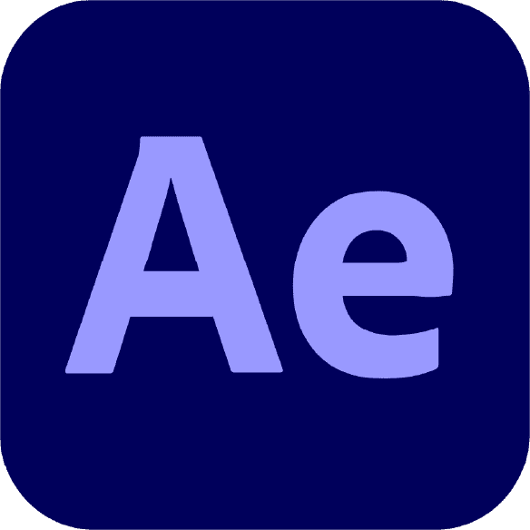

Ansigtet bag
flying content
Jeg hedder Ditte Olivia - men jeg svarer lige så gerne til Ditte. Jeg studerer multimediedesign i Odense og arbejder til dagligt hos Bloomit Odense, hvor jeg har ansvaret for virksomhedens visuelle og digitale udtryk. Her arbejder jeg med alt fra content creation og sociale medier til visuelle kampagner og digital branding.
Kreativitet er en stor del af min hverdag, både professionelt og personligt. Jeg arbejder med kunst i flere former, herunder maleri, relieftryk og grafiske plakater, og jeg motiveres af at skabe visuelle løsninger, der kombinerer æstetik, storytelling og strategi. Jeg trives i krydsfeltet mellem design, kommunikation og digitalt håndværk.
For mig handler godt design ikke kun om, hvordan noget ser ud, men også om hvordan det føles, fungerer og kommunikerer med mennesker.


Min faglige palette!







Lyder jeg som
noget for jer?
Har I et projekt, en idé eller et behov, der kræver stærkt visuelt indhold, så lad os tale om det — jeg vil gerne høre mere.
Kontakt